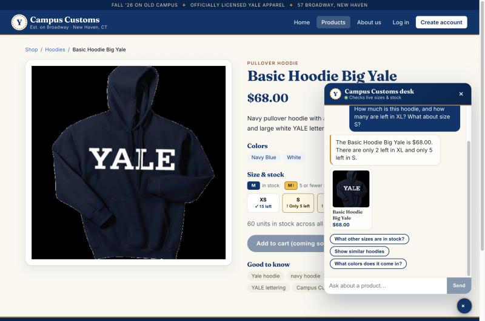
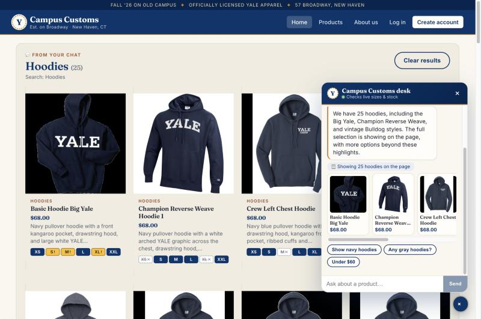
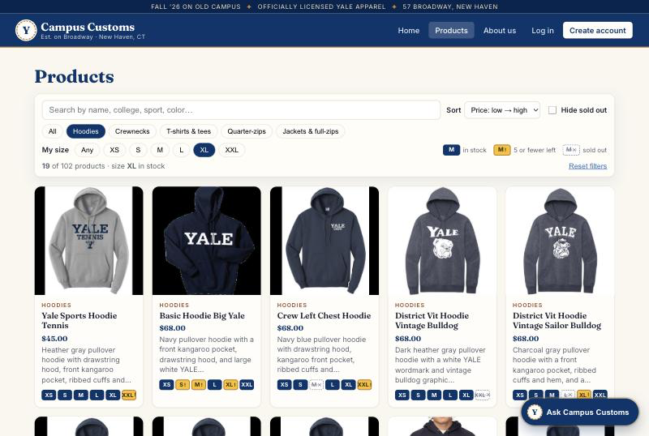
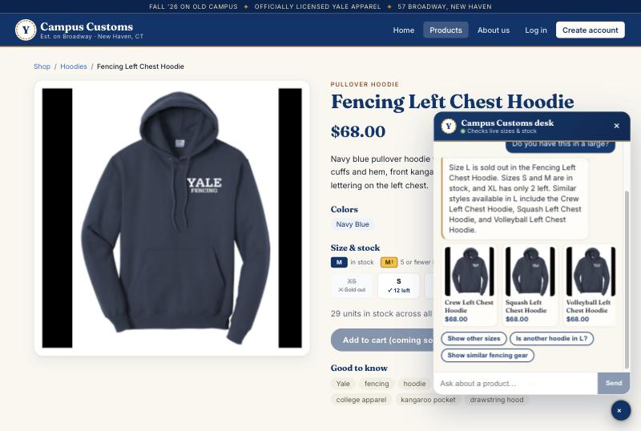

Check 1 — Chat checks inventory and price from the database
On the Basic Hoodie Big Yale product page, the shopper asked the chat: How much is this hoodie, and how many are left in XL? What about size S?

get_product_price / get_stock tools instead of guessing, and the page's own size buttons ("S ! Only 5 left") agree.
DB: catalogue + inventory for basic-hoodie-big-yale | ||||||
|---|---|---|---|---|---|---|
| price | XS | S | M | L | XL | XXL |
| $68.00 | 15 | 5 | 5 | 8 | 2 | 25 |
Check 2 — Category question fills the page with product cards
On the Home page, the shopper asked the chat: What hoodies do you have?

Check 3 — Usability feature (Problem 9): "My size" filter + color-blind-safe size strips
Products page with Hoodies + My size: XL + Sort: Price low → high (URL: /products?cat=Hoodies&size=XL&sort=price-asc).

| DB check (hoodies, size XL) | |
|---|---|
| Hoodies in catalogue | 25 |
| …with XL in stock | 19 |
| Cheapest three | Yale Sports Hoodie Tennis $45 · Basic Hoodie Big Yale $68 (XL = 2) · Crew Left Chest Hoodie $68 |
| Correctly hidden (XL = 0) | Champion Reverse Weave Hoodie 1, Ice Hockey Left Chest Hoodie, UA Gameday Double Knit Hood, Yale Grandma Hoodie, Yale Sports Hoodie Baseball, Yale Sports Hoodie Swimming |
Bonus — Usability feature (Problem 9): in-stock alternatives + quick replies
On the Fencing Left Chest Hoodie page, the shopper asked: Do you have this in a large?

find_alternatives tool offers three similar hoodies that do have L (all match the DB). Quick-reply chips ("Show other sizes"…) suggest the next step, so the shopper isn't left at a dead end.
| DB: size L | Fencing Left Chest Hoodie | Crew Left Chest Hoodie | Squash Left Chest Hoodie | Volleyball Left Chest Hoodie |
|---|---|---|---|---|
| quantity | 0 (sold out) | 8 | 25 | 8 |